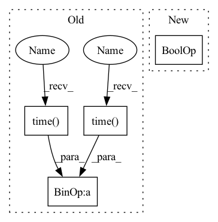

Pattern ID :25510

Before Change
metrics=[],
verbose=verbose,
)
start_time = time.time()
history = trainer.train(
dataloader,
n_iterations=n_iterations,
load_checkpoint_mode=LoadCheckpointMode.LAST_ITR if not force_overwrite else None,
force_overwrite=force_overwrite,
exec_metrics_on_train=False,
desc=f"Training {checkpoints_name}:{predictor_type.__name__}"
f"<{spikes_auto_encoder.n_units}u, {spikes_auto_encoder.n_encoder_steps}t>",
)
training_time = time.time() - start_time
history.plot(save_path=f"{checkpoint_folder}/figures/training_history.png")
try:
network.load_checkpoint(checkpoint_manager.checkpoints_meta_path, LoadCheckpointMode.BEST_ITR, verbose=verbose)
After Change
spiking_foresight_steps = (params["n_time_steps"]-1)*params["n_encoder_steps"]
predictor_type = params.get("predictor_type", params["encoder_type"])
hidden_units = params["hidden_units"]
if isinstance(hidden_units, int) and hidden_units > 0:
hidden_units = [hidden_units]
if not hidden_units:
hidden_units = []
In pattern: SUPERPATTERN
Frequency: 3
Non-data size: 4
Instances
Fragment ID: 77715719
Project Name: neurotorch/neurotorch
Commit Name: 64a0ffca71a7f748afaaa83fbced12fef6d8078a
Time: 2022-09-14
Author: 50332514+JeremieGince@users.noreply.github.com
File Name: applications/time_series_forecasting_spiking/results_generation.py
M Class Name: AnonimousClass
N Class Name: AnonimousClass
M Method Name: train_with_params(12)
N Method Name: train_with_params(12)
M Parent Class:
N Parent Class:
M File Name: applications/time_series_forecasting_spiking/results_generation.py
N File Name: applications/time_series_forecasting_spiking/results_generation.py
M Start Line: 286
M End Line: 352
N Start Line: 196
N End Line: 271
'>
Before Change
def detect_image(self, image):
pimage = self.process_image(np.copy(image))
start = time.time()
boxes, scores, classes = self.predict(pimage, image.shape)
print("time: {0:.6f}s".format(time.time() - start))
if boxes is not None:
self.draw(image, boxes, scores, classes)
return image
After Change
pimage = self.process_image(np.copy(image))
boxes, scores, classes = self.predict(pimage, image.shape)
if boxes is not None and draw_image:
self.draw(image, boxes, scores, classes)
return image, boxes, scores, classes
'>
Fragment ID: 77715721
Project Name: miemie2013/keras-yolov4
Commit Name: 66c08ea10b379a6100bf4f71b836a6d7efeaaad7
Time: 2020-05-21
Author: 53960695+miemie2013@users.noreply.github.com
File Name: model/decode_np.py
M Class Name: Decode
N Class Name: Decode
M Method Name: detect_image(3)
N Method Name: detect_image(2)
M Parent Class: object
N Parent Class: object
M File Name: model/decode_np.py
N File Name: model/decode_np.py
M Start Line: 31
M End Line: 36
N Start Line: 20
N End Line: 26
'>
Before Change
metrics=[],
verbose=verbose,
)
start_time = time.time()
history = trainer.train(
dataloader,
n_iterations=n_iterations,
load_checkpoint_mode=LoadCheckpointMode.LAST_ITR if not force_overwrite else None,
force_overwrite=force_overwrite,
exec_metrics_on_train=False,
desc=f"Training {checkpoints_name}:{predictor_type.__name__}"
f"<{spikes_auto_encoder.n_units}u, {spikes_auto_encoder.n_encoder_steps}t>",
)
training_time = time.time() - start_time
history.plot(save_path=f"{checkpoint_folder}/figures/training_history.png")
try:
network.load_checkpoint(checkpoint_manager.checkpoints_meta_path, LoadCheckpointMode.BEST_ITR, verbose=verbose)
After Change
spiking_foresight_steps = (params["n_time_steps"]-1)*params["n_encoder_steps"]
predictor_type = params.get("predictor_type", params["encoder_type"])
hidden_units = params["hidden_units"]
if isinstance(hidden_units, int) and hidden_units > 0:
hidden_units = [hidden_units]
if not hidden_units:
hidden_units = []
'>
Fragment ID: 77715720
Project Name: neurotorch/neurotorch
Commit Name: 64a0ffca71a7f748afaaa83fbced12fef6d8078a
Time: 2022-09-14
Author: 50332514+JeremieGince@users.noreply.github.com
File Name: applications/time_series_forecasting_spiking/results_generation.py
M Class Name: AnonimousClass
N Class Name: AnonimousClass
M Method Name: train_with_params(12)
N Method Name: train_with_params(12)
M Parent Class:
N Parent Class:
M File Name: applications/time_series_forecasting_spiking/results_generation.py
N File Name: applications/time_series_forecasting_spiking/results_generation.py
M Start Line: 286
M End Line: 352
N Start Line: 196
N End Line: 271
'>
Before Change
skeletons_list = utils.convert_to_skeletons(keypoints_list)
// pass keypoints" bboxes to tracker
start_track = time.time()
tracks, debug_img = tracker.update(bboxes, rgb_frame, debug=args.debug_track)
end_track = time.time() - start_track
// classify tracked skeletons" actions
if len(tracks) > 0:
After Change
// end_track = time.time() - start_track
// Action Recognition
if len(predictions) > 0 and args.task == "action":
predictions = action_classifier.classify(predictions)
end_pipeline = time.time() - start_pose
'>
Fragment ID: 77715722
Project Name: cv-zmh/human-action-recognition
Commit Name: 823be28eb9d87c3bc808c93c636fb811cb4039a5
Time: 2021-08-31
Author: zinmoehtoo2015@gmail.com
File Name: src/demo.py
M Class Name: AnonimousClass
N Class Name: AnonimousClass
M Method Name: main(0)
N Method Name: main(0)
M Parent Class:
N Parent Class:
M File Name: src/demo.py
N File Name: src/demo.py
M Start Line: 50
M End Line: 129
N Start Line: 51
N End Line: 111